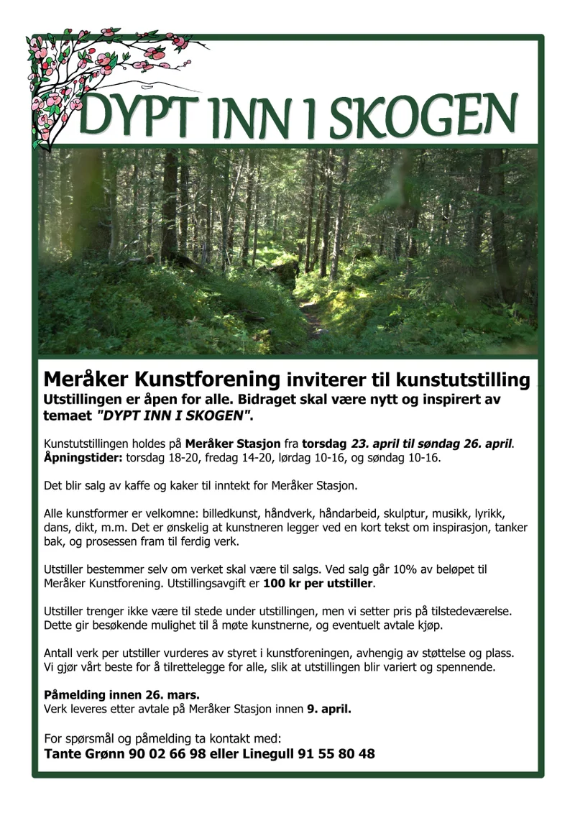
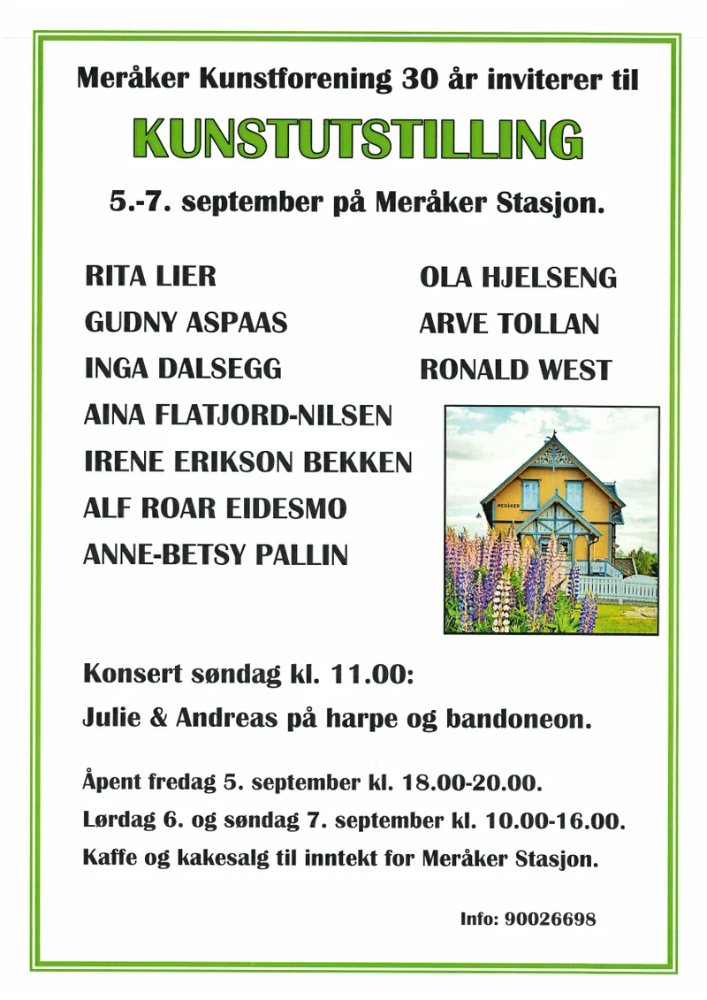
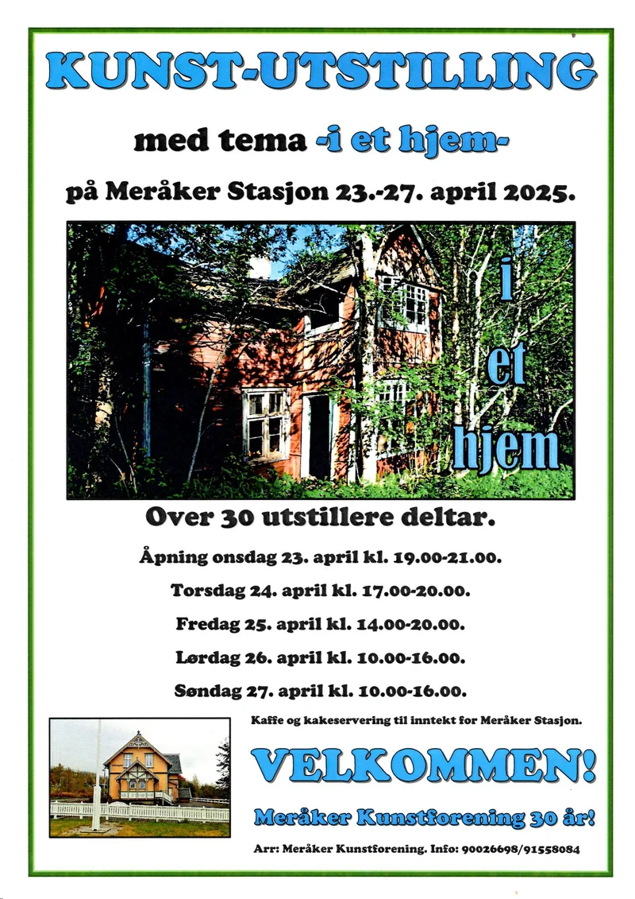

UTSTILLINGER
Meråker kunstforening arrangerer minst en årlig felles kunstutstilling hvor alle våre medlemmer kan stille ut arbeidene sine. Noen år arrangerer vi også flere fellesutstillinger, samt utstillinger for individuelle kunstnere.
2026
Dypt inn i skogen
Utstilling 23.-26. april 2026.

Deltakere: Gunn Turid Jørgensen, Tetiana Hliadchenko, Jova Nordstrøm, Meråker Kulturskole, Lill Kristin Brenntrø, Cathrine Ånstad Arntsen, Anders Gjesdal Oliversen, Linda Brenntrø, Line Merete Dalsplass Aursand, Kathrine Høttmon, Jon Einar Visser, Tilda Harju, Ørnulf Ånstad, Frida Norstrøm, Frode Fredriksen, Silje Ven Nesgård, Anastasia Diachenko, Ina Krasnovska-Kaftan, Gunn Merethe Prytz, Kirsti Reppe, og Carolien ten Bosch.
2025
Jubileumsutstilling - Meråker Kunstforening 30 år
Utstilling 5.-7. september 2025.

Deltakere: Rita Lier, Ola Hjelseng, Gudny Aspaas, Arve Tollan, Inga Dalsegg, Ronald West, Aina Flatjord-Nilsen, Irene Erikson Bekken, Alf Roar Eidesmo, Anne-Betsy Pallin.
i et hjem
Utstilling 23.-27. april 2025.

Deltakere: Gunn Turid Jørgensen, Hege Christin Berg Samdahl, Elise Christiane Berg Kjølaas, Øivind Killengren, Tetiana Hliadchenko, Jova Nordstrøm, Tone Henriksen, Meråker Kulturskole, Else Fagerheim, Lill Kristin Brenntrø, Cathrine Ånstad Arntsen, Ve Wolff, Lena Karalar, Liv Randi Raavand, Jon Stormo, Anders Gjesdal Oliversen, Rita Brenntrø, Line Merete Dalsplass Aursand, Kathrine Høttmon, og Jon Einar Visser.
2024
Livets glade dager
Utstilling 18.-21. april 2024.
2023
Gamle trakter
Utstilling 27.-30. april 2023.
2018
Vandreutstilling
Utstilling 1.-4. mars 2018.
2015
Jubileumsutstilling - Meråker Kunstforening 20 år
Utstilling 6.-13. august 2015.
2014
Minneutstilling for Brit Blæstervold
Utstilling 2014.
2010
Med åpne sanser
Utstilling 1.- juni 2010.
2007
Håkon Gullvåg utstilling
Utstilling 25.- august 2007.
2006
Sommerutstilling i Grubba
Utstilling 2.- juni 2006.
2005
Sommerutstilling i Grubba
Utstilling 3.-17 juni 2005.
2004
Sommerutstilling i Grubba
Utstilling 2.-16 mai 2004.
2003
Sommerutstilling i Grubba
Utstilling 30. juni-13 juli 2003.
2002
Alice & Bjørn Bratsberg - Illustrasjoner til bygdeboka og andre bilder
Utstilling 10.-17 november 2002.
2002
Utstilling
Utstilling 30. juni-14 juli 2002.
2001
Utstilling
Utstilling 30. juni-15 juli 2001.
Deltakere: Mari Krokann Berge, Grethe Nergaard, Brit Blæstervold, og Per Arne Holmberg.
2000
Kunstutstilling 1. klasse
Utstilling 28. november 2000.
2000
Kamme Greiff og Sverre Juliussen
Utstilling 15. juli-13 august 2000.
2000
Gunn Elin Løkken og Ulla Langåssve
Utstilling 25. juni 2000.
1999
Terje Dannemark og Gabrielle Poh
Utstilling 5.- august 1999.